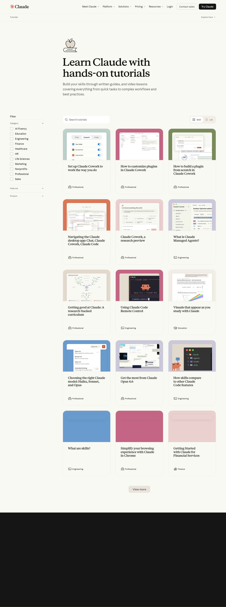
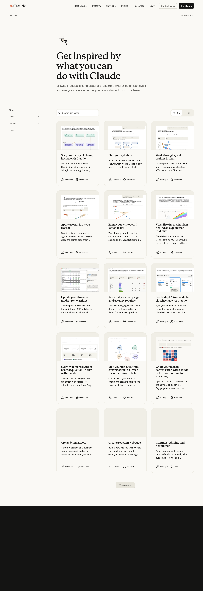

📘 Tutorials
偏上手、功能说明和产品导览。当前看到的代表条目包括 What is Claude Managed Agents?、Using Claude Code Remote Control、Navigating the Claude desktop app。

这条线专门承接 Tutorials、 Use Cases 和 Anthropic Engineering。 目标不是简单贴外链，而是逐篇翻译、保住关键图和界面截图，再回写成站内可持续阅读的中文入口。
偏上手、功能说明和产品导览。当前看到的代表条目包括 What is Claude Managed Agents?、Using Claude Code Remote Control、Navigating the Claude desktop app。

偏场景样例和工作方式。更适合被转成“专题补充案例”或“功能落地短文”，而不是照着整页直译。

偏工程方法、系统设计和产品背后的实现思想。这是最值得逐篇翻译的主干来源。

| 来源 | 优先级 | 建议落点 | 为什么先做 |
|---|---|---|---|
Scaling Managed Agents: Decoupling the brain from the hands |
高 | `Meta-Agent` / `(Managed) Meta-Agent` | 和站内 `Managed Agents / Cabinet / Multica / Superset` 线直接相连。 |
Claude Code auto mode: a safer way to skip permissions |
高 | `Claude Code 教程` / `发版监督` | 直接影响 Claude Code 使用方式，也能回连权限边界和 yolo 风险。 |
Harness design for long-running application development |
高 | `codex-loop` / `Connector Runtime Design` | 和我们当前的 daemon、harness、workspace、长循环任务线高度相关。 |
Using Claude Code Remote Control |
中高 | `Claude Code 教程` 子页 | 可以和站内 remote / terminal / connector 线互相补充。 |
What is Claude Managed Agents? |
中高 | `Meta-Agent` 入门页 | 适合做面向新读者的轻量入口。 |
Use Cases 里的教育 / 财务 / agents 场景页 |
中 | `教程案例补充` / `热点跟进` | 更像案例库，适合择优转成短篇，不建议整页平推。 |